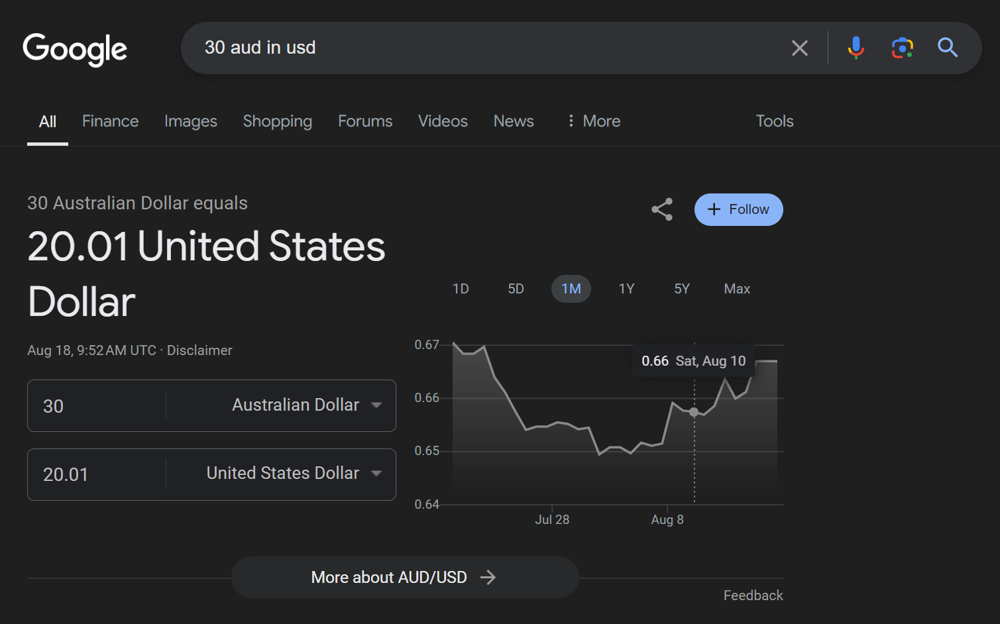

8/18/2024
sorry for the uhh,, long wait for a new blog ig idk
it is 6:45 AM as i'm writing this
on-topic though, i watched Velmi_r's playthrough of the last horror entry in the catto boi series, "Catto Boi - Requiem" and GOD DAMN CATTO BOI HAS IMRPOVED SO MUCH
incase you don't know what catto boi is, (how could you not :rage:) catto boi initially started as one of those games like sonic.exe
there was a lot of uhh..
that's pretty much what was in the first game, "The Adventures of Catto Boi". no not the new one the old one
after that game, "Catto Boi's Bizarre Adventure" came, and was pretty much the same as the last game. (i barely remember,, sigh)
more and more games came, and catto boi was slowly evolving. even having some actual lore!
but then mango-ki, the creator of catto boi, decided to take all of those games down and started remaking them one by one
you could VERY much tell that they put a lot more effort and passion into these remakes.
one of these remakes was "Catto Boi - Requiem". mango-ki cooked with this one
i am still shocked at that ending dude WHAT
i just really wanted to say,, thank you
these games actually changed my life,
they introduced me to a new genre of horror in probably the best way possible LOL
i honestly don't know where i would be now if i hadn't seen YuB (or zachbealetv i can't remember which one i watched first) playing catto boi.
it inspired me to do well, all of this
so thank you, for making these games even if they weren't that great. you inspired me to actually do stuff. /lh
<3
why does the heart symbol look so,, off dude WHY
man i can't wait for "Catto Boi Forever"
anyway, can someone give me $30.00 AUD (or about $20.00 USD) so i can buy all the catto boi games and have the catto mess with my computer ok thanks
